Pingtype Advanced Documentation
Confused? Go back:
Index
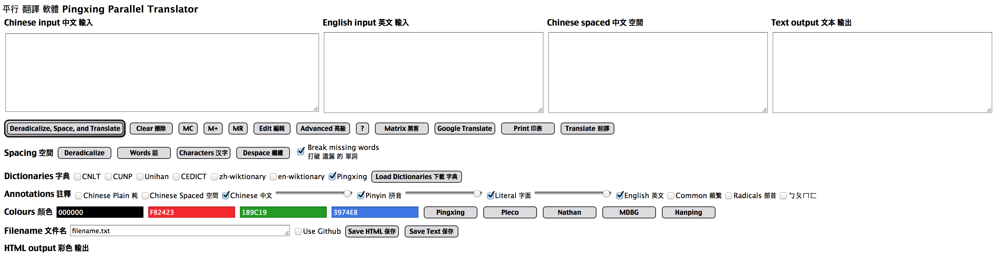
Translate buttons
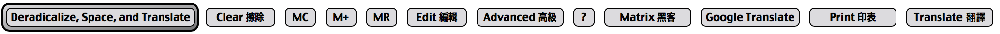
The first button has changed name! It is now called Deradicalize, Space, and Translate. What does that mean?
Deradicalize needs some explanation. Chinese text is shown on a computer using the Unicode alphabet. That includes many other languages. Some characters look the same. Kangxi Radicals look the same as some Chinese characters.
Do you think these two look the same?
⽺ 羊
They are different! They are characters 12154 kangxi radical sheep (U+2F7A) and 32650 Chinese, Japanese, Korean (cjk) unified ideograph (U+7F8A).
Can Google Translate cope with this? No!
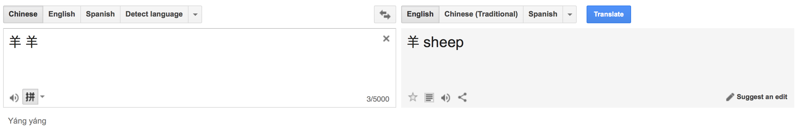
Therefore I have a
table of Kangxi radicals and Chinese characters, which will fix this problem.
There is also a Google Translate button for conveniently sending your Chinese input to Google. This is useful if you want to get some English input. Maybe Google will add my features to their translator app one day, and then I won't need this link. But I don't expect that they're listening.
What if you don't want to re-space the Chinese, and just want the parallel translation? This could be useful if you're testing another word spacing program (e.g. Apple has one built in, which you can use by holding down the option key and pressing the right arrow to skip to the next word). Then you should enter your text into the Chinese Spaced text area, and press Translate. This is much faster than doing word spacing.
Matrix
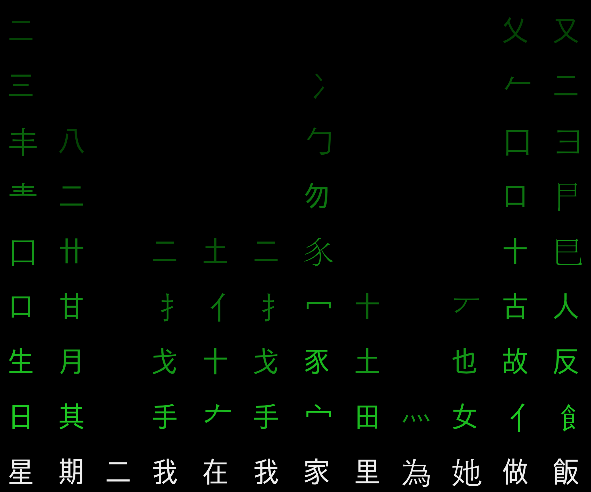
Have you watched the film Matrix (1999)?
There is a scene with some CJK characters in green text falling down a screen. I think it looks kinda cool. When reading a Chinese sentence, I do something similar with the characters. I'm decomposing the character into the parts, and checking against a dictionary in my mind to find the meaning.
That is what happens with the Matrix button. The genealogy of the character is shown in green above the character itself. This is an easy way to see the parts that are used to build characters.
Print
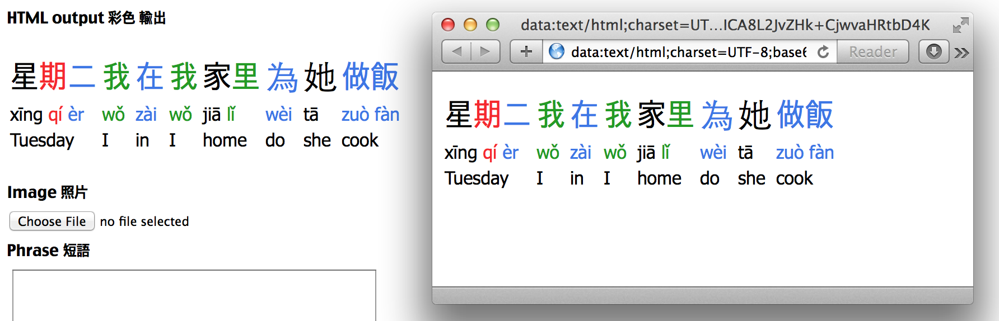
The HTML output looks beautiful, and now you want to print it out to study on paper. But there are all these buttons around the interface. You could take a screenshot, but it would be better to print-to-PDF.
Clicking the Print button will open a new window/tab with the HTML output as a Data URI. Note that you must Translate the text first, then print it. Clicking Print when the HTML output is blank will give you a blank window.
If you just want black and white text, then you can copy-paste from the Text Output area.
Spacing
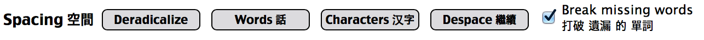
The Deradicalize function has been discussed
above. There is a separate button for it, because maybe you don't need to do this. You're in the advanced section now, and I guess you know what you're doing!
The Words spacing button will take text from the Chinese Input, add spaces, and put it into the Chinese Spaced output. It does not translate those words. This is useful if you have an automatic script to add spaces to hundreds of files. It works by reading 5 characters ahead "星期二我在", and searching the dictionary for the word. If the word does not exist, then it reads only 4 characters ahead "星期二我". That doesn't exist either, so it reads 3 characters ahead "星期二". Aha! That exists! So copy it to the output, and move ahead 3 characters. Then repeat - 5, 4, 3, 2, 1. It's a lot of dictionary lookups. That is why using a bigger dictionary makes word spacing slow.

This is the way that local people read. Have you ever seen someone using their finger as they read from top to bottom? They don't move their finger for every character, but only for each word. Sometimes they even move their finger back up, and re-space a section.
I chose to use a maximum of 5 characters for every word because it's the longest length of a name on Ruten (Taiwan's eBay). Maybe there are words that are longer, but I've found that 5 is long enough for most purposes. If you want to change your own spacing to have a longer word, you can edit the text in the Chinese Spaced area, and Edit the dictionary to add the word.
Did you know that 法國 (France) means Law Nation?
Characters spacing adds spaces between every character separately. This is the way your teachers are trying to make you learn Chinese. It doesn't work. Even local people use multi-character words! People talk about characters by saying "盼望" 的 "望" ("panwang de wang"). People speak with pauses between words. Do you know why Chinese is easier to learn to speak instead of read? It's not the traditional characters! It's the lack of spaces.
People keep thinking that studying the characters will help you learn. Alex Lebrun wrote an
article that got shared on Hacker News this week about this. Sorry, but it just doesn't work for me. Words are much easier to learn than some obscure history of a character I rarely see written.
I first wrote this program in December 2016 using the Unihan dictionary, which only has characters. Words weren't supported at all until February. I ported it from AppleScript to JavaScript in March, then added more features and wrote this documentation in April. I've tried so many ways to learn Chinese over the last 2 years. Learning words instead of characters has made the biggest difference to my studies.
You can use the Character spacing to see what I mean. "Tuesday I in I home do she cook" makes much more sense than "star date two I in I house village do she work food".
Despace will remove the spaces from text in the Chinese Input text area. This is sometimes necessary if you copy-paste text from somewhere else, e.g. lyrics.
When you finish fixing your spacing, click the Translate button on the right. Do not click the default Deradicalize, Space, and Translate button! That will re-space the text. You just want to translate.
There is also a checkbox labelled Break missing words. Sometimes there is a long word in the dictionary that contains part of a smaller word. For example, "豎立起來" is in the dictionary. "立起來" is not. Should I add "立起來" as a new word, or should I split it into characters? The default action is to break missing words into characters. That means that there are no missing words. However, it is useful for dictionary maintenance if you add or remove these words. It's easier to find the words if you disable Break missing words, because then they show up as Chinese instead of Pinyin and English.
Dictionaries
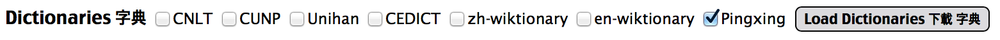
Word spacing and translation need a good dictionary. There are a few, but none of them were good enough for me. That's why I made my own dictionary, and dictionary editor.
I started out with Unihan. That is only characters. It also has problems. "地" is pronounced "dì", not "de". I emailed Richard Cook, the Unicode Consortium maintainer of this dictionary, and he refused to make any edits without a formal academic proposal. Frankly, he was a bit arrogant. Even when I showed him a list of hundreds of additional pinyin that could be added based on CEDICT, he refused to admit that his dictionary is not complete. He said it's Hanyu Da Zidian's fault - his source data. Passing the blame gets you nowhere with me. I also suggested adding Bopomofo as a field, but he wasn't interested, even though it is a standard alphabet in Taiwan. The problem is that he is an American, living in America, and not familiar with real life in a Chinese-speaking country.
CNLT is a Bible translation that I read every day. I used Apple's option-right-arrow spacing method with an AppleScript to split all the words in the Bible. Then I sorted those, found the unique words (there are 15734), and got Pinyin and English translations using Google Translate. I split the pinyin into separate words using another AppleScript, and extracted the tone diacritics to numbers.
It was a start. But many Bible words got broken by Apple's word spacing algorithm. For example, "哈利 路 亞" is one word "哈利路亞" (hallelujah). This was also a problem for names. How can I find a list of real Bible words? The CUNP translation is the most common, and exists in traditional characters and
pinyin. I wrote a script to split the Chinese using the spaces in the pinyin. Unfortunately, there are a LOT of errors in this data! The pinyin Bible is missing lots of words (2862 errors). To people who believe in the inerrancy of the Holy Scripture, this is a really serious problem. I talked to Jorge from WordProject, and he's given me permission to fix his pinyin, but that's going to take me a few months.
So far so good. But then I needed to do my homework. "星期二" is one word, "Tuesday". But that isn't in the Bible! Neither is "電視" (TV). This dictionary is working fine for reading the Bible, but it's still not enough for daily life. I've been adding words manually using the Dictionary Editor, but I wanted to find some other data sources.
CEDICT is an open-source Chinese-English dictionary. I emailed the original developer Paul Denisowski about adding my Bible words, but he never replied. There is a
form to add words on the CEDICT website, but it requires signing up for an account and new words must be approved by editors. I want something fast, so I can add a word and retranslate with the click of a button.
zh-wiktionary has the most words (300955). Unfortunately, there is usually no pinyin or English translation on those pages. The spacing might be wonderful, but you'll have a lot of missing words in your translation if you only use this.
en-wiktionary has 59884 Chinese words and pinyin. It's not bad. It also has classifiers "measure words", which I'll write about in another
article. The data has some problems though, so there are many words that are missing definitions or have wrong translations.
I hope to add words from
OpenCC soon. I'll add support for simplified characters before public release, but I'm pushing this out to Facebook first to get some feedback from friends.
Pingtype is the dictionary that I use and edit. It's based on Unihan, the Bible words from CNLT and CUNP, some lyrics from KHOP, and my Chinese homework for the last 3 months. It doesn't have all the words, and that's why I need you to help add more. If you're good at programming and want to help re-process the wiktionary data or add new dictionaries from other sources, please contact me!
When you choose the dictionaries you want to use, click Load Dictionaries to download those from the server and let you use them to parse text. Note that just clicking the checkbox is not enough - you must reload by clicking the button!
Annotations
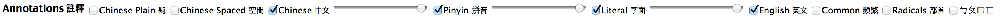
Imagine you're reading with a local friend. Maybe they don't to see the spaces and the colours, they just want the plain Chinese text. Well, now you can add that! Select the features you want, and click Translate to generate the HTML.
Chinese Plain shows Chinese with no spaces. This is what most text looks like in everyday life.
Chinese Spaced shows Chinese with spaces. I want people to start using this. I'm advocating for its use on Chinese Wikipedia. If I succeed, I'll ask Apple and Google to auto-add spaces when typing in iOS and Android. I can also try to approach Academia Sinica to change the ROC government's recommendation. I need support from other people to encourage me to try to bring about these reforms.
Chinese shows the Chinese characters with tone colours.
The slider is used to change the opacity. This is inspired by my
textbook, Let's Learn Chinese. Usually you'll want to change the sliders for pinyin and literal translations, not Chinese, but it's there if you want. You don't have to re-translate after changing this setting.
Pinyin is the way of writing Chinese using the English (Latin, Romanised) alphabet. I think it's the easiest way to learn new vocabulary for listening & speaking. Traditional characters are still needed for reading. There is a slider here so you can fade out the pinyin and try to read the real characters.
Literal is a word-for-word translation of Chinese. This keeps Chinese grammar and sentence structure, but shows the English translation of each word. This is how I learn the meaning of new vocabulary.
English is a real translation, taken from the English Input text area. Google Translate will show you Chinese Plain and English. My program shows all the steps in between.
Common will make common words appear in bold. The list of most common words are in
commonWords.txt and are derived from 931 CNLT words that occur more than 100 times in the Bible. I need some more data sources (e.g. Wikipedia, News) to make this list more practical for everyday life. If you use this feature, you can edit the common words list using
HubText.
Radicals is some research that I did by myself. "包" (pǎo) sounds like "包" (bāo), and it looks like it too! There are 412 sounds in Chinese, ignoring tones. I also wrote a script to find the genealogy of every character. I discovered that there are 903 different radicals, and all characters can be built out of those (that is more than the 214 Kangxi radicals). I drew graphs of the pinyin sounds, to find out whether there's a correlation between the sound and the way it's written.
It doesn't work. Well, it works sometimes, but not always. "吩" (fēn) is pronounced like "分" (fēn) , and "咐" (fu) is pronounced like "付" (fù). But "做" (zuò) has a 古, so shouldn't it sound like "gu" or "hu"? It doesn't sound similar at all. So the mismatch is shown in red. You can also click the radical to view the graph that I used to find those correlations.
Bopomofo (ㄅㄆㄇㄈ) is a writing system used to teach children in Taiwan. If you need to learn this alphabet, I have another
article about that. This data does not come from the same dictionary, it comes from a file that I copied from
Pinyin Dictionary. I contacted the developers of that app to discuss word spacing, but they never replied. If the pinyin (from the dictionary) and bopomofo tones are different, the pinyin in my editable dictionary takes precedence. I usually disable bopomofo because it makes the word boundaries harder to see. It might help you with your homework though. If you use this feature and find a problem, you can edit the dictionary using
HubText.
Colours
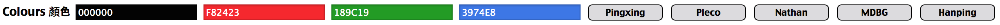
There are already 4 standard colour systems to write tones in Chinese. Albert wrote an
article all about these colour systems, and the ongoing debate about which is better.
Why on earth did I make a new system? Because I have a cool ballpoint pen with 3 colours: blue, black, and red. I spent hours trying to learn Chinese by copying characters. I would only have to change pen when I saw a third-tone "ˇ". That made it faster for me to do my homework. Unfortunately, it means that I wrote my teacher's name in red, which my teacher told me is a serious
taboo. All the colour schemes use red, though, so maybe we should invent
another standard. Meanwhile, you can choose your own using the colour picker. It updates the CSS directly, and you don't need to re-translate.
Save
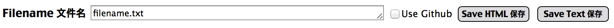
You can save your translated text, and please do!
Choose a unique filename. If it's the name of the dictionary file, I'll have to do some maintenance and I won't be happy. Then click Save HTML to save the HTML output, or Save Text to save the Text output.
Use Github is a checkbox option. This is for really advanced users, who decide to host this on their own server. If Use Github is not checked, it will instead try to access a PHP script (writeToFile.php) in the same folder as the app. That will be used for writing the file instead of the Github API. You might want to do that if you're using a script to automatically translate hundreds of documents (e.g. the Bible).
Keyboards
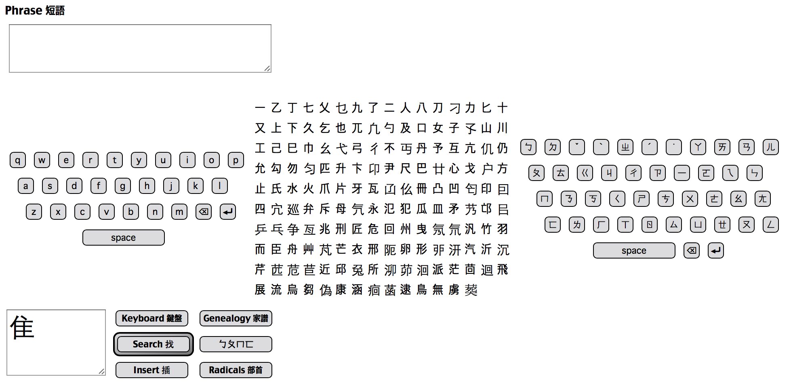
There are also advanced features in the character typing area. In addition to adding words to the Chinese input text area, there is also a Phrase text area a bit closer to the text input. This is left over from the development of the text input part and doesn't support word spacing, but characters are sent there directly from the text input, so it's a bit faster than clicking Translate every time.
There are also two more keyboards in addition to the
pinyin keyboard: bopomofo and radicals. The bopomofo keyboard is usually used in Taiwan.
The radical keyboard was my own research. I found the genealogies of every character, and discovered that every character could be built up of 158 parts. I don't usually use this keyboard because it's faster to use handwriting recognition, then decompose and rebuild a character, but I sometimes use it when I want to talk about the parts of characters that don't match my iPhone's font. I call those glyph errors, and have another
article about that too.
Genealogy
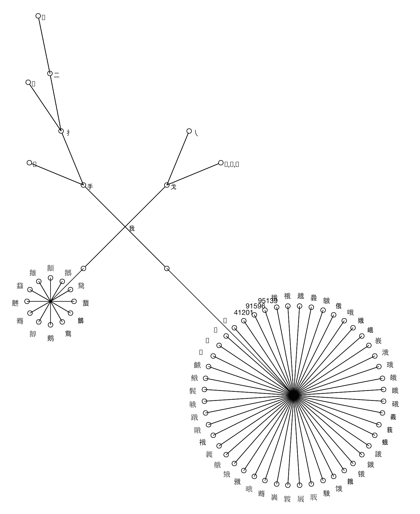
We've learned that characters have two parents (usually left and right, but sometimes top and bottom). Those parents also have parents (grandparents), and so on. Characters also have children.
TurtleSheet is a program I made to draw a
rail map. It's basically a copy of LogoWriter, ported to JavaScript+Leaflet. I can tell a "turtle" to put a pen down, and walk around the screen drawing a line.
I wrote a script for TurtleSheet to draw the family tree, or "genealogy" of a Chinese character. It recursively finds the parents, and the parents of those parents, until there are no more parents. This is the same script that I used to find the ancestors of every character and generate
Genealogies.txt, which is the data I use to search for a character using the parts. The graphical view is optional, but I think it looks cute. Just click the "Genealogy" button to draw it for the current character in the typing area.